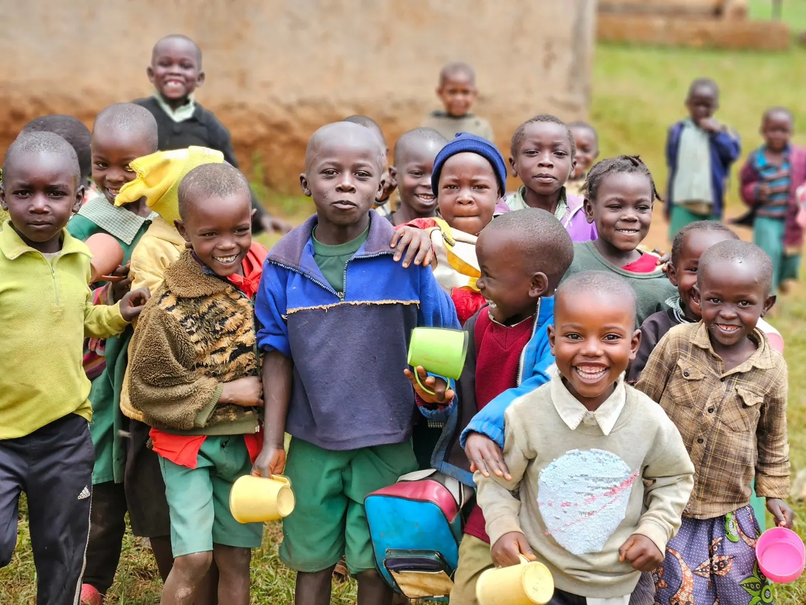
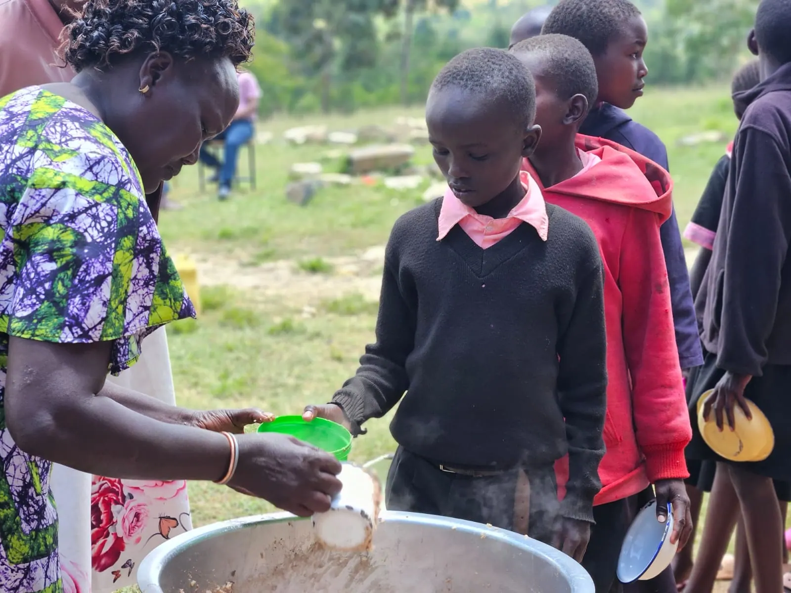

School feeding.
Daily nutritious meals for 11,400+ learners across 30+ schools in Kenya's most food-insecure regions.
From farm to classroom.
The programme rests on three pillars: local sourcing, community ownership and nutritional excellence. Each morning, trained cooks at partner schools prepare Lishe Mix porridge from ingredients bought from local smallholder farmers.

Local procurement
We partner with farmers' cooperatives in each county to source maize, millet, cassava, sorghum and soybeans, ensuring freshness and boosting local agricultural incomes.
Lishe Mix preparation
Ingredients are milled and blended into the Lishe Mix formula: a 90 kg bag that feeds approximately 300 children per serving.
School delivery
Bags are delivered weekly to each partner school and stored in dedicated food stores managed by school feeding committees.
Daily meal service
Community cooks prepare hot porridge each morning before the first lesson. Children receive a warm, filling meal before 8:30 AM.
Monitoring and reporting
Our field officers conduct monthly visits, track attendance data, and report impact to donors and county governments.
What is in the meal?
A complete nutritional profile from locally grown Kenyan ingredients. These five make up one 90 kg bag.
Maize
Energy-rich carbohydrates for sustained concentration through the school day.
Millet
Dietary fibre supporting digestion and steady energy release.
Sorghum
Protein and B-vitamins supporting brain development.
Cassava
Additional energy and vitamin C to support immunity and growth.
Soybeans
Complete plant protein for muscle development and growth.
One 90 kg bag feeds approximately 300 children one complete, balanced breakfast.
Fund a bag of Lishe MixA meal that keeps children in class.
Teachers report better concentration, stronger participation and fewer absences once the morning meal begins.
Daily attendance at Cherang'any Primary after the morning meal began, according to the head teacher.
Counties covered
